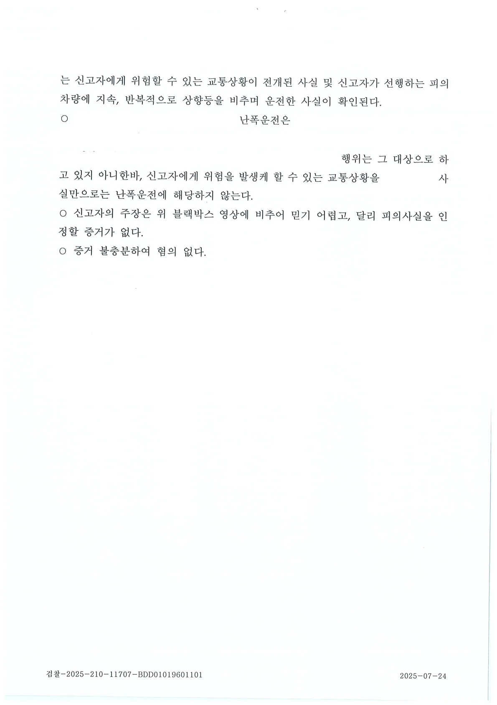

고속도로 난폭운전 가해자로 몰려 처벌받을 위기에 처한 의뢰인을 위해, 블랙박스 영상의 정밀 분석과 예리한 법리적 방어를 통해 억울함을 풀고 '무혐의'를 받아냈습니다
안녕하세요. 법률사무소 준일 문호준, 한석일 변호사입니다.
최근 블랙박스 보급과 스마트폰 국민신문고 앱의 활성화로 인해, 도로 위 짧은 찰나의 마찰이 '난폭운전'이나 '보복운전' 형사 고소로 이어지는 사례가 급증하고 있습니다.
난폭운전으로 혐의가 인정될 경우, 형사 처벌은 물론 면허 정지나 취소라는 치명적인 행정 처분까지 뒤따르게 되어 생업에 큰 지장을 초래할 수 있습니다. 특히 고속도로에서 벌어진 사건은 대형 사고의 위험성 때문에 수사기관에서 더욱 엄격하게 들여다보는 경향이 있습니다.
오늘 소개해 드릴 성공 사례는 고속도로 주행 중 뒤따라오던 차량의 지속적인 상향등 위협에 놀라 급제동을 했다가, 도리어 '난폭운전(도로교통법 위반)'으로 억울하게 신고를 당했던 의뢰인을 변호하여 '혐의없음(증거불충분)' 처분을 이끌어낸 사건입니다.
1. 사건의 발단: "제가 위협을 받았는데, 오히려 난폭운전 피의자가 되었습니다."
의뢰인은 2025년 5월 22일 19시 24분경, 수도권제1순환고속도로 의정부 방면에서 일산 방향으로 주행하고 있었습니다. 급한 일정이 있어 충분한 안전거리를 확보한 상태로 차선을 변경하며 이동 중이었습니다.
그런데 뒤따라오던 신고자 차량이 의뢰인이 진로를 변경한 후, 갑자기 지속적이고 반복적으로 상향등(하이빔)을 비추기 시작했습니다. 전방 교통 상황과 뒤차의 상향등 불빛에 놀란 의뢰인은 순간적으로 급제동을 하게 되었습니다.
하지만 며칠 뒤, 의뢰인은 경찰로부터 연락을 받게 됩니다. 뒤차 운전자가 의뢰인을 "수차례 진로를 변경하고, 급제동을 하며 워셔액을 뿌렸다"며 도로교통법 위반(난폭운전)으로 고소한 것입니다.
2. 변호사의방어 전략: 블랙박스 정밀 분석과 날카로운 법리 해석
이러한 운전 시비 사건은 단순히 "나도 억울하다", "고의가 아니었다"는 감정적인 호소만으로는 수사기관을 설득할 수 없습니다. 저희는 즉각 객관적 증거 확보와 법리적 허점 공략에 나섰습니다.
① 블랙박스 영상 정밀 분석
② 난폭운전 성립 요건의 엄격한 법리적 다툼
3. 결과: '혐의없음(증거불충분)' 처분
검찰은 저희 사실분석과 법리적 주장을 모두 받아들였습니다. 이에 따라 '증거불충분으로 인한 혐의없음(불기소)'처분을 내렸습니다.
※ 구체적인 사건은 사실관계에 따라 달라질 수 있습니다.

 한석일 대표변호사
한석일 대표변호사